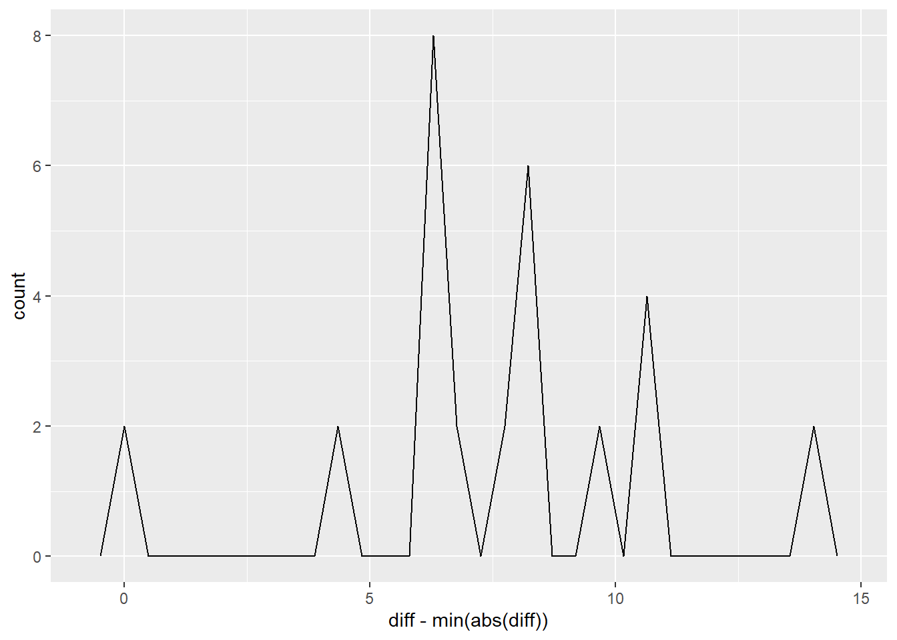
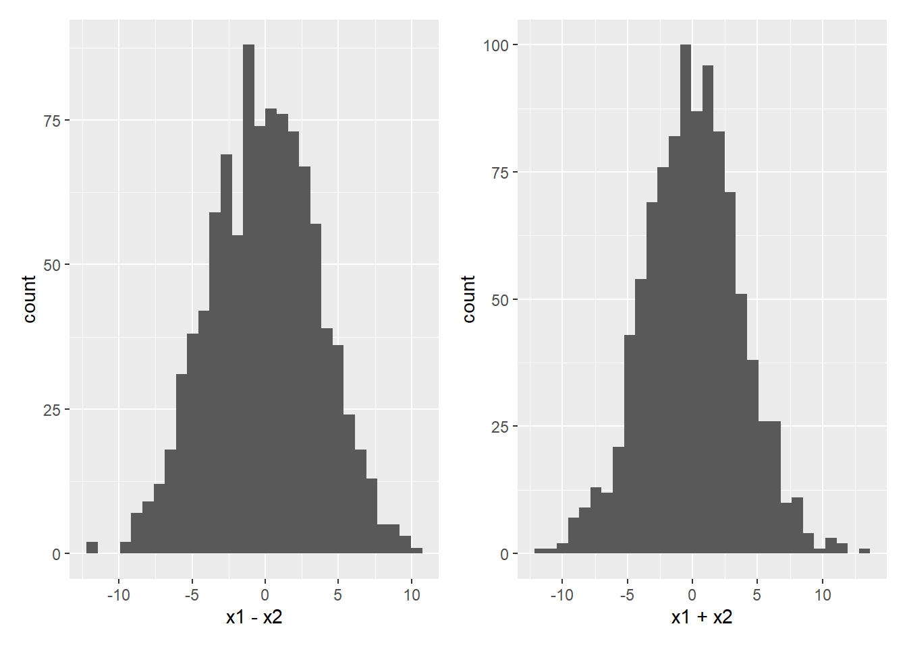
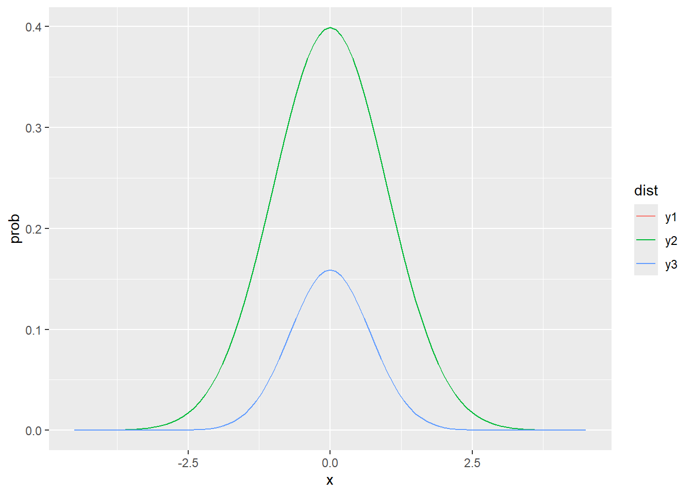

library(tidyverse)
library(ggplot2)
library(patchwork)
data <- read_csv("data/CaseStudy3_StroopEffect.csv")Rows: 720 Columns: 5
── Column specification ────────────────────────────────────────────────────────
Delimiter: ","
chr (3): word, color, condition
dbl (2): id, reaction_time
ℹ Use `spec()` to retrieve the full column specification for this data.
ℹ Specify the column types or set `show_col_types = FALSE` to quiet this message.grouped <- data %>% group_by(id, condition) %>% summarize(mean_reaction_time=mean(reaction_time))`summarise()` has grouped output by 'id'. You can override using the `.groups`
argument.grouped# A tibble: 60 × 3
# Groups: id [30]
id condition mean_reaction_time
<dbl> <chr> <dbl>
1 1 congruent 397.
2 1 incongruent 421.
3 2 congruent 406.
4 2 incongruent 417.
5 3 congruent 399.
6 3 incongruent 419.
7 4 congruent 401.
8 4 incongruent 418.
9 5 congruent 400.
10 5 incongruent 419.
# ℹ 50 more rowswider <- grouped %>% pivot_wider(values_from = mean_reaction_time, names_from = condition)
wider# A tibble: 30 × 3
# Groups: id [30]
id congruent incongruent
<dbl> <dbl> <dbl>
1 1 397. 421.
2 2 406. 417.
3 3 399. 419.
4 4 401. 418.
5 5 400. 419.
6 6 399. 413.
7 7 399. 416.
8 8 402. 419.
9 9 396. 417.
10 10 400. 419.
# ℹ 20 more rowsindependent1 <- grouped %>% group_by(condition) %>% mutate(Mean=mean(mean_reaction_time), diff=mean_reaction_time-Mean) %>% ungroup() %>% summarize(N = n(), Mean= diff(Mean), SD = sd(diff), SE = SD/sqrt(N), LowerCI = Mean-1.96*SE, UpperCI = Mean+1.96*SE) %>% ungroup() Warning: Returning more (or less) than 1 row per `summarise()` group was deprecated in
dplyr 1.1.0.
ℹ Please use `reframe()` instead.
ℹ When switching from `summarise()` to `reframe()`, remember that `reframe()`
always returns an ungrouped data frame and adjust accordingly.independent1# A tibble: 59 × 6
N Mean SD SE LowerCI UpperCI
<int> <dbl> <dbl> <dbl> <dbl> <dbl>
1 60 18.1 2.38 0.307 17.5 18.7
2 60 -18.1 2.38 0.307 -18.7 -17.5
3 60 18.1 2.38 0.307 17.5 18.7
4 60 -18.1 2.38 0.307 -18.7 -17.5
5 60 18.1 2.38 0.307 17.5 18.7
6 60 -18.1 2.38 0.307 -18.7 -17.5
7 60 18.1 2.38 0.307 17.5 18.7
8 60 -18.1 2.38 0.307 -18.7 -17.5
9 60 18.1 2.38 0.307 17.5 18.7
10 60 -18.1 2.38 0.307 -18.7 -17.5
# ℹ 49 more rowsindependent1 <- grouped %>% group_by(condition) %>% summarize(N=n(), Mean=mean(mean_reaction_time), SD = sd(mean_reaction_time), SE = SD/sqrt(N), LowerCI = Mean-1.96*SE, UpperCI = Mean+1.96*SE) %>% ungroup()
independent1# A tibble: 2 × 7
condition N Mean SD SE LowerCI UpperCI
<chr> <int> <dbl> <dbl> <dbl> <dbl> <dbl>
1 congruent 30 399. 2.64 0.483 398. 400.
2 incongruent 30 417. 2.13 0.388 417. 418.independent2 <- independent1 %>% summarize(N=mean(N), Mean=diff(Mean), SD = sqrt(sum(SD^2)), SE=SD/sqrt(N), LowerCI=Mean-1.96*SE, UpperCI = Mean+1.96*SE)
independent2# A tibble: 1 × 6
N Mean SD SE LowerCI UpperCI
<dbl> <dbl> <dbl> <dbl> <dbl> <dbl>
1 30 18.1 3.39 0.619 16.9 19.3t.test(mean_reaction_time ~ condition, data=grouped)
Welch Two Sample t-test
data: mean_reaction_time by condition
t = -29.224, df = 55.443, p-value < 2.2e-16
alternative hypothesis: true difference in means between group congruent and group incongruent is not equal to 0
95 percent confidence interval:
-19.33960 -16.85781
sample estimates:
mean in group congruent mean in group incongruent
399.4007 417.4994 paired1 <- wider %>% ungroup() %>% mutate(diff=incongruent-congruent)
paired1 # A tibble: 30 × 4
id congruent incongruent diff
<dbl> <dbl> <dbl> <dbl>
1 1 397. 421. 24.5
2 2 406. 417. 10.5
3 3 399. 419. 20.0
4 4 401. 418. 16.8
5 5 400. 419. 18.8
6 6 399. 413. 14.6
7 7 399. 416. 16.6
8 8 402. 419. 17.2
9 9 396. 417. 21.1
10 10 400. 419. 18.8
# ℹ 20 more rowspaired2 <- paired1 %>% summarize(N=n(), Mean=abs(mean(diff)), SD=sd(diff), SE=SD/sqrt(N), LowerCI = Mean-1.96*SE, UpperCI = Mean+1.96*SE)
paired2# A tibble: 1 × 6
N Mean SD SE LowerCI UpperCI
<int> <dbl> <dbl> <dbl> <dbl> <dbl>
1 30 18.1 3.15 0.575 17.0 19.2t.test(wider$congruent, wider$incongruent, data=wider, paired = TRUE)
Paired t-test
data: wider$congruent and wider$incongruent
t = -31.497, df = 29, p-value < 2.2e-16
alternative hypothesis: true mean difference is not equal to 0
95 percent confidence interval:
-19.27393 -16.92348
sample estimates:
mean difference
-18.09871 ggplot(paired1, aes(x=diff-min(abs(diff)))) + geom_freqpoly() `stat_bin()` using `bins = 30`. Pick better value `binwidth`.
# These paired t-tests shouldn't run unless student has an old computer and an old version of R
# t.test(reaction_time ~ condition, data=data1, paired=TRUE)
# t.test(mean_reaction_time ~ condition, data=grouped, paired=TRUE)
avg_error_diffs <- tibble(x1=rnorm(mean=0,sd=2, n=1000), x2=rnorm(mean=0,sd=3, n=1000))
p1 <- ggplot(avg_error_diffs, aes(x=x1-x2)) + geom_histogram()
p2 <- ggplot(avg_error_diffs, aes(x=x1+x2)) + geom_histogram()
p1+p2`stat_bin()` using `bins = 30`. Pick better value `binwidth`.
`stat_bin()` using `bins = 30`. Pick better value `binwidth`.
avg_error_diffs %>% summarize(Mean=mean(x1-x2), SD = sd(x1-x2))# A tibble: 1 × 2
Mean SD
<dbl> <dbl>
1 -0.0839 3.68avg_error_diffs %>% summarize(Mean=mean(x1+x2), SD = sd(x1+x2))# A tibble: 1 × 2
Mean SD
<dbl> <dbl>
1 0.0189 3.67range= seq(from = -4.5, to = 4.5, by = 0.1)
first <- tibble(x=range, y=dnorm(range, mean=0, sd=1))
second <- tibble(x=range, y= dnorm(range, mean=0, sd=1))
joint <- tibble(x=range, y1=first$y, y2=second$y, y3=first$y*second$y)
joint <- joint %>% pivot_longer(cols=c(y1,y2,y3), names_to= "dist", values_to="prob")
ggplot(joint, aes(x=x, y=prob, color=dist)) + geom_line()